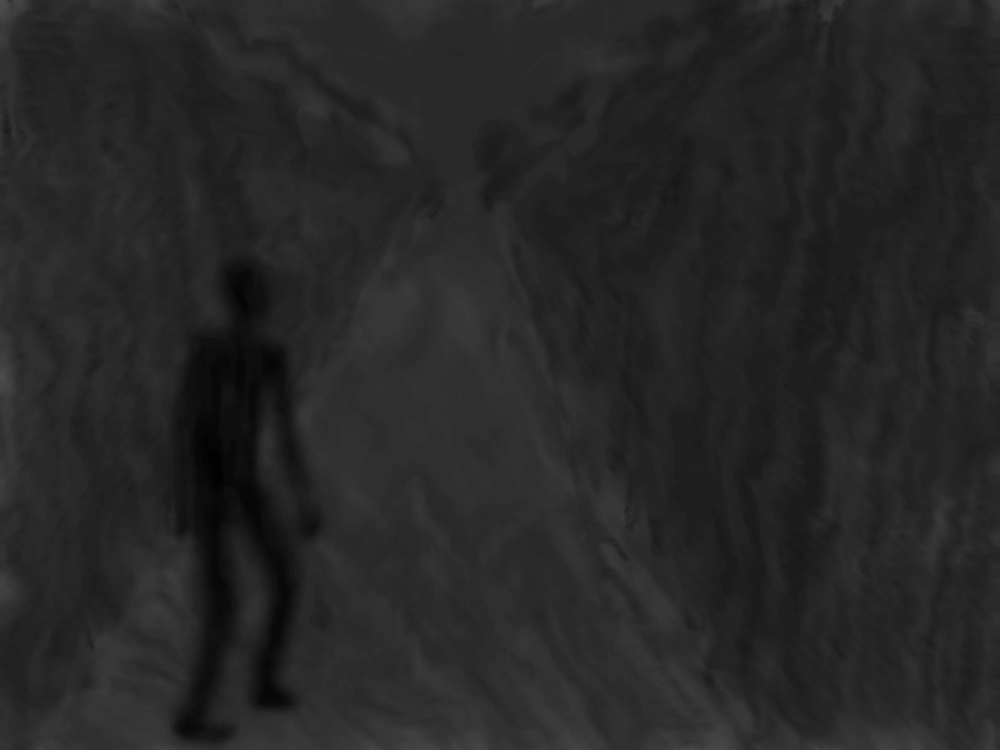

Le rêve que je fis cette nuit là était plutôt absurde. Je me trouvais dans un couloir sombre et je courais.
Songe

[IMAGE]
Mon « trouble » avait disparu et je ne sentais rien à part le poids de l’obscurité.
[VIDEO]
Quelques mètres me séparaient d’une porte d’où provenaient des rayons lumineux : La porte de sortie.
Cliquez sur la porte pour l'ouvrir